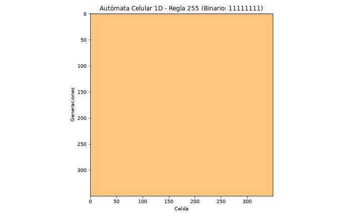
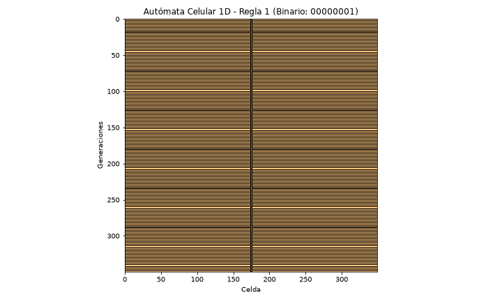
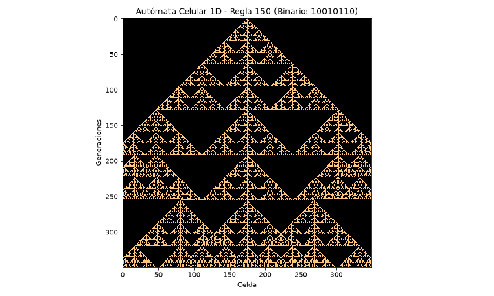
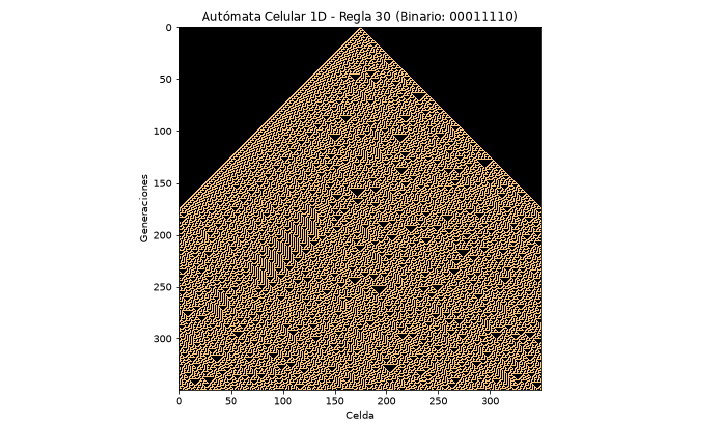
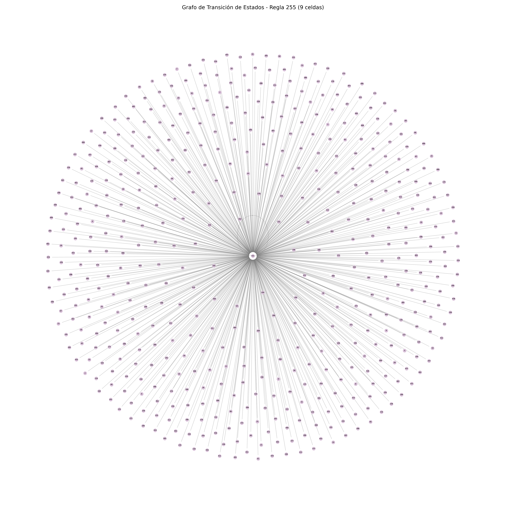
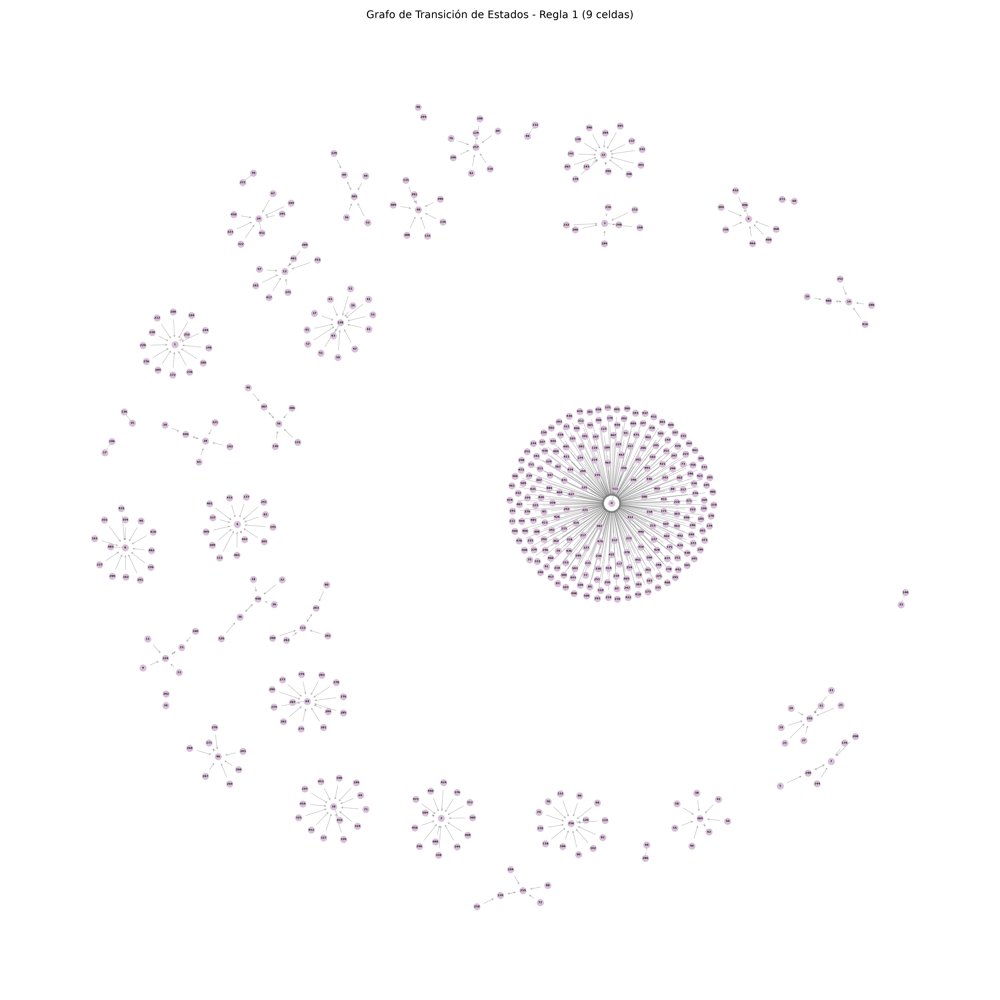
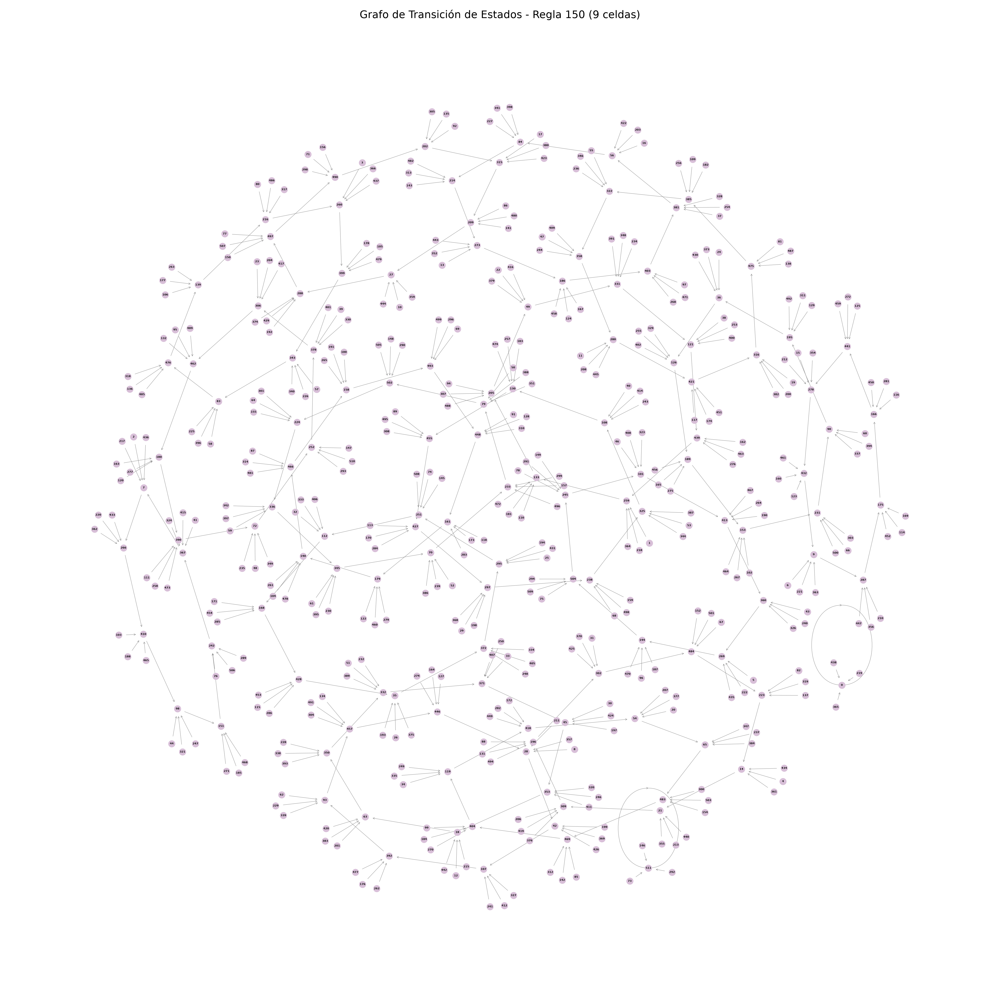
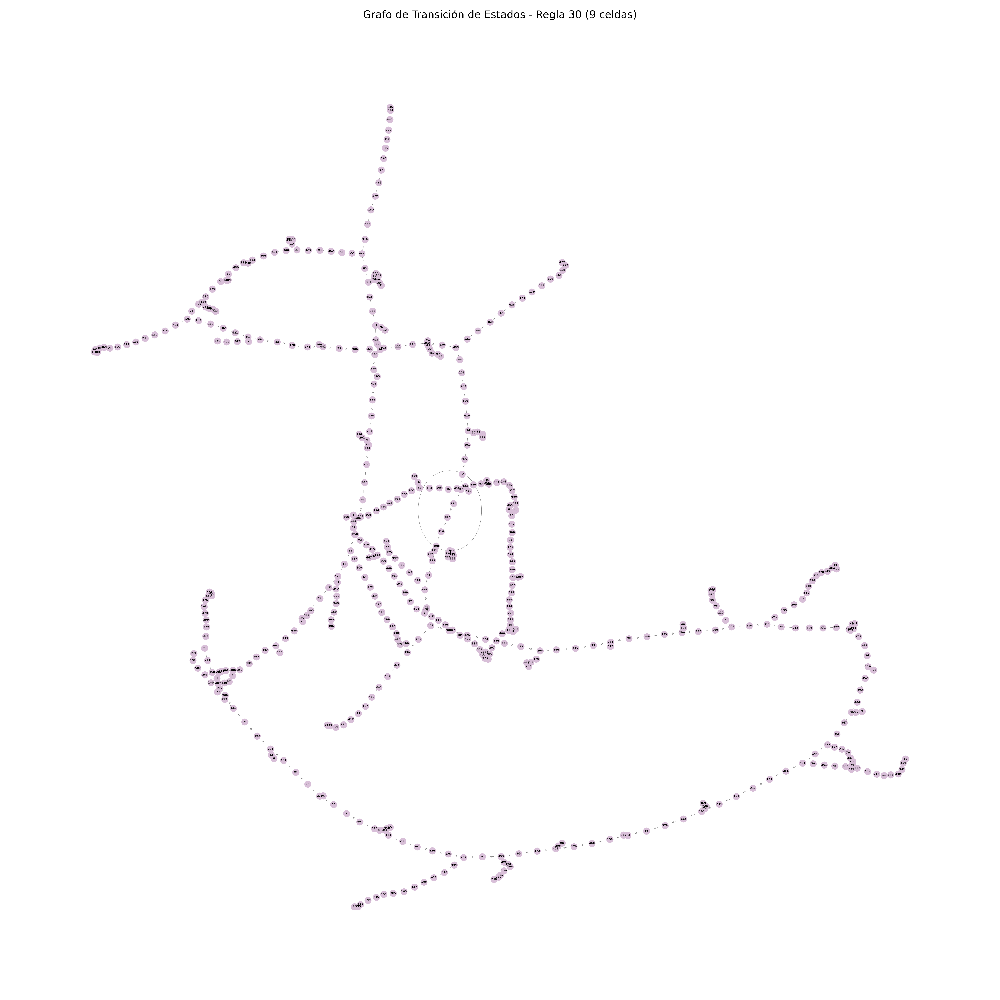
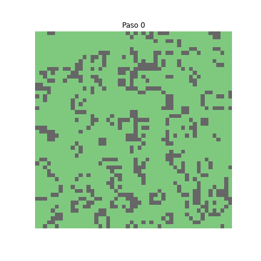

Autómata Celular 1D




Análisis Dinámico




Juego de la Vida
El juego de la vida de Conway es un ejemplo de autómata celular en dos dimensiones. Es un juego sin jugadores, es decir,
evoluciona a partir de condiciones iniciales sin necesidad de interveciones extra.
Se juega en un mapa de dos dimensiones, donde las casillas pueden tener dos estados: viva o muerta.
Cada celda tiene 8 vecinos, conocida como la "vecindad de Moore". Se considera una frontera periódica para que las celdas
que se encuentran en las orillas puedan tener 8 vecinos.
Reglas del juego de la vida:
- Se comienza en una malla de \( n \times n \) donde cada celda solo puede tomar valores 1 ó 0.
- Se establecen las condiciones iniciales.
- El sistema evoluciona a través de pasos del tiempo discretos donde:
- Una celula viva sobrevie si tiene exactamente 2 ó 3 vecinos vivos.
- Una celula muerte revive si tiene exactamente 3 vecinos vivos.
A continuación se muestra un caso del juego de la vida en 100 pasos con condiciones iniciales aleatorias:

Recursos
En la siguiento liga se encuentran los códigos utilizados: Códigos